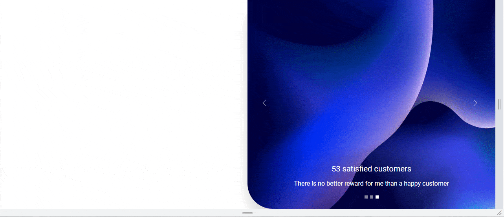

Do you remember the lesson about responsiveness when we talked about Mobile First Approach in Tailwind?
The mobile-first approach in web design is a development strategy that prioritizes the creation and optimization of a website for mobile devices before scaling it up to larger screens, such as tablets and desktops.
In practice, this means starting with the smallest screen size for your design and layout, and then progressively enhancing the design for larger screens using CSS media queries.
Our Split screen with the Half carousel, however impressive, is more decorative than essential. It looks great on the desktop view, but on mobile devices every space is at a premium and it is better to allocate it to key elements and information.
The problem is that so far in this project we have not followed the Mobile First Approach. We designed our layout for the desktop view, but when you reduce the screen width to the mobile view, you'll see that it just looks bad and weird..
We should definitely hide the left column on small screens, because there is simply no room for a split screen layout here.
It's simple - we just need to use the .hidden class and add it
to the element we want to hide.
The problem is that now this item will not be visible on any screens. So we need to add a condition that we only want to hide it on the mobile view, and on large screens it should be visible.
Breakpoints are perfect for this task.
Remember, however, that when using the Mobile First Approach we should start by defining how our element should look in the mobile view (this will be a default behavior), and then we can add a condition on what should happen on larger screens
The code below is an instruction for the browser that says - by default,
hide this element (by applying class
.hidden which sets CSS property display: none; to
the element) ...
...but when the width of the screen is large (breakpoint .lg,
i.e. greater than 1024px) then display it by
giving it the CSS property display: block (by applying
.block class).
Let's use this knowledge and hide the left column of our Split Screen on the mobile view.
Add the .hidden and .lg:block classes to the first
column in our grid.
However, this causes a strange problem - the column with the carousel, instead of taking up the free space created by the hidden left column, jumped to its place, which left us with free space on the right side.
This is because in addition to hiding the column, we should also define how exactly our grid should behave at certain widths. Let's fix it in the next step.
The only thing we need to do is to add the class
.grid-cols-1 to the grid, which will set it to one column by
default (Mobile First Approach), and a class with a breakpoint
.lg:grid-cols-2, which will restore 2 columns on large screens.
And now everything works as it should.
